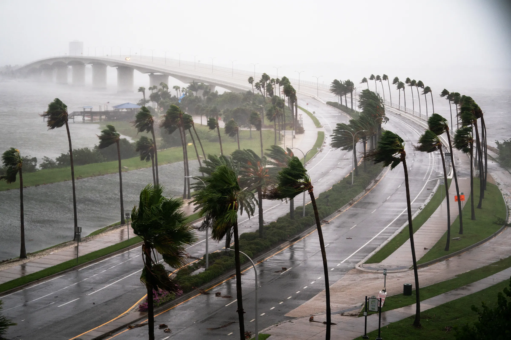

Hoy en día se utiliza la magnitud (Kph) para proyectar la gravedad de un huracán. Ésta se refiere a su intensidad o fuerza, que se mide principalmente en términos de la velocidad de sus vientos sostenidos. Generalmente, los huracanes son clasificados en la escala Saffir-Simpson. Se dividen en cinco categorías, según la velocidad máxima de sus vientos. La escala ayuda a predecir los posibles daños y riesgos asociados con el huracán.
Para adentrarnos en el tema, primero debemos entender la diferencia entre estos fenómenos:
Ciclón
Es una terminología general. Refiere a un sistema de baja presión con vientos girando en espiral hacia el centro. Engloba tanto fenómenos débiles como intensos.
Hay ciclones tropicales (Océano Índico), extra tropicales (latitudes más altas, no depende de aguas cálidas) y subtropicales.
Huracán
Tipo de ciclón tropical con vientos sostenidos de al menos 119 km/h.
Se utiliza para los sectores Atlántico Norte, Pacífico Norte y Pacífico Central.
Puede causar fuertes lluvias, marejadas y vientos violentos.
Tifón
Ciclón tropical equivalente a un huracán, pero en otro sector (Pacífico Noroeste).
Tormenta
Sistema meteorológico que puede incluir lluvias y vientos intensos, y actividad eléctrica. Su intensidad varía.
Puede ocurrir en cualquier región.
Las hay tropicales, eléctricas, severas.
Cómo es su presencia en el mundo?
Desde 1978, año en que se creó el sistema de nombramiento vigente para estos fenómenos, se han registrado 829 tormentas a lo largo del mundo.
Las regiones más afectadas a lo largo de la historia han sido Asia y Centro América. Aunque no es una región, Estados Unidos también ha sido de los lugares más golpeados.
Por qué son un peligro
En Estados Unidos, el fenómeno meteorológico más grave son los huracanes (revisar). Por esto, es clave tener un buen sistema que permita prevenir y alivianar las consecuencias que tienen hoy en día.
Para comparar, veamos el caso de Chile.
En nuestro caso, el fenómeno natural que más nos golpea son los terremotos; sin embargo, hemos logrado legislar de tal manera que las construcciones, por ejemplo, tienen que cumplir ciertas reglas para prevenir daños graves como muertes, heridos, afectados, personas sin hogar, daño asegurado y costo proyectado de reparación.
-Aunque siempre podemos seguir mejorando-.
Volviendo a Estados Unidos, a pesar de que existe un sistema de alerta que avisa previamente a los habitantes de las ciudades que serán afectadas por un huracán con anticipación, hay otros factores que las políticas públicas actuales no cubren. Las desigualdades sociales y económicas, la falta de infraestructura resiliente, los impactos a largo plazo no contemplados en los modelos, la coordinación ineficaz entre agencias y la subestimación de los efectos reales del huracán. Además, el uso exclusivo del sistema Saffir-Simpson para medir estas catástrofes, no es suficiente para ayudar a prevenir los efectos de futuros desastres.
A pesar de que sí han logrado disminuir la cantidad de muertes y otras consecuencias graves, todavía hay algunos aspectos que pueden mejorar. Por ejemplo, los sistemas de evacuación, la regulación de las construcciones, etc.

Los sistemas de emergencia actuales
Estados unidos
Este país cuenta con un sistema robusto de respuesta ante huracanes debido a la experiencia acumulada con desastres naturales. A nivel federal, estatal y local, existen planes de emergencia coordinados:
El monitoreo y pronóstico de los huracanes se realiza a través de el Centro Nacional de Huracanes (NHC) y parte de la Administración Nacional Oceánica y Atmosférica (NOAA). Además, la FEMA (Agencia Federal para el Manejo de Emergencias) coordina la respuesta a desastres a nivel nacional, en colaboración con autoridades locales.
También se emiten advertencias y alertas a través de la Red Nacional de Alerta de Emergencia (Wireless Emergency Alerts, WEAs), que envía mensajes de texto a los teléfonos móviles, y mediante los sistemas de sirenas, radio, televisión y aplicaciones móviles. Dependiendo de la intensidad del huracán, las autoridades locales organizan evacuaciones masivas, especialmente en zonas costeras y áreas de riesgo elevado. Los evacuados pueden ser dirigidos a refugios de emergencia organizados por la FEMA y las autoridades estatales y locales.
En este punto llama la atención que, pese a que Estados Unidos tiene un sistema de emergencia bien desarrollado, de todas formas resulta afectado fuertemente por las tormentas año tras año.
De vuelta a nuestra hipótesis, esta realidad constata la importancia de acuñar un sistema que mida las consecuencias bien, para poder prevenir pérdidas de mejor manera.
Analicemos con más detención el caso norteamericano:
Sin duda se trata de un caso especial. Dentro de un mismo país, hay ciudades que no estan bien preparadas, mientras que otras tienen grandes sistemas de emergencia.
Caso Helene 2024 - Categoría cuatro
El huracán Helene se formó a finales de septiembre de 2024 en el noroeste del mar Caribe, inicialmente a partir de una perturbación entre Jamaica y la península de Yucatán. Helene ganó fuerza rápidamente y se intensificó hasta convertirse en un huracán de categoría 4 con vientos de 140 mph. Dejó más de 200 muertos en el sureste de Estados Unidos, lo que lo convirtió en el ciclón más mortífero desde Katrina en 2005 (que llegó a ser un huracán de categoría 5, la máxima en la escala de intensidad, con vientos de más de 280 km/h).
En general, se estima que el número de víctimas de un huracán de magnitud 4 ocila entre decenas y algunos cientos. Sin embargo, los fallecidos tras Helena fueron muchos más que el promedio de tormentas de esa categoría. Destacó por ser una de las más mortales debido a diversos factores como la densidad de población en las áreas afectadas, la preparación y respuesta de los sistemas de emergencia, el tiempo que el huracán permanece sobre una región, la cantidad de lluvias y las inundaciones resultantes, así como el nivel de vulnerabilidad de la infraestructura. Hubo desbordamientos de ríos, deslizamientos de tierra y una significativa destrucción de viviendas e infraestructura. Además, la falta de preparación y las limitadas capacidades de evacuación en algunas áreas también fueron factores que incrementaron la mortalidad, demostrando que la peligrosidad de un huracán va más allá de su intensidad.
Huracán Fifi (1974) - Baja magnitud, alta mortalidad
Un caso más extremo ocurrió 50 años atrás. El huracán Fifi, categoría 1 según la escala Saffir-Simpson, causó más de 8.000 muertes en América Central, afectando principalmente a Honduras. Los expertos sostienen que existen tres razones que explican los grandes daños. Aunque la intensidad del viento fue baja, el huracán produjo una enorme cantidad de lluvia (más de 500 mm en algunas áreas), lo que generó inundaciones y deslizamientos de tierra devastadores. Por otra parte, las regiones afectadas eran ya vulnerables por la pobreza y la falta de infraestructura adecuada. Finalmente, se identificó una vulnerabilidad geográfica de la zona, ya que muchas áreas montañosas y cercanas a ríos eran especialmente propensas a los desastres naturales cuando las lluvias eran tan intensas.
No fue un huracán de gran magnitud en términos de vientos. La combinación de lluvias torrenciales y la vulnerabilidad de la región a desastres naturales fueron factores clave en el alto número de víctimas y daños.
Huracán Dorian (2019) - Alta magnitud, baja mortalidad
Dorian fue una tormenta de máxima intensidad, que no tuvo los efectos que se estimarían. Alcanzó vientos sostenidos de hasta 295 km/h, los más altos de la escala Saffir-Simpson y se reportaron alrededor de 70 muertes, una cifra relativamente baja para un huracán de categoría 5, considerando su magnitud. En comparación, el huracán Katrina de magnitud 5 causó más de 1.800 muertes. Hay tres razones que explican este inesperado resultado. Aunque fue extremadamente fuerte, su movimiento fue muy lento, permitiendo que las autoridades pudieran evacuar a las personas de las zonas más afectadas antes de que el huracán tocara tierra. Esto contribuyó a una baja mortalidad en áreas donde el huracán golpeó más fuerte. Las Islas Bahamas y otras áreas afectadas ya estaban preparadas, ya que el huracán se formó con bastante anticipación y hubo tiempo para implementar evacuaciones y medidas de protección. Después de golpear las Bahamas, Dorian se desplazó hacia el norte y se debilitó antes de llegar a Estados Unidos, reduciendo el impacto en comparación con huracanes que permanecen más tiempo en tierra o en áreas densamente pobladas.
¡La magnitud no indica el verdadero impacto de un huracán!
Lo expuesto justifica nuestro
IGH
Índice de gravedad de huracanes
nos basamos en una base de datos del NOAA (National Oceanic and Atmospheric Administration).
Con la ayuda de inteligencia artificial, ponderamos las variables que interpretamos como definitorias a la hora de calcular el posible daño.
OFDA/BHA response
AID contribution ('000 USD$)
Magnitude (kph)
Total deaths
No. Injured
No. Homeless
Total affected
Reconstruction costs ('000 USD$)
Insured damage ('000 USD$)
Total damage ('000 USD$)
10% magnitud:
indica fuerza de daño potencial, pero no siempre indica el daño real.
20% Impacto humano
8% Total deaths: irreparables; reflejan daño.
5% No. Injured: daño físico, afectación de infraestructura sanitaria.
4% No. Affected: reflejo en la población.
3% No. Homeless: la pérdida del hogar tiene consecuencias a largo plazo.
40% Impacto económico
20% Total damage: principal indicador del daño económico.
10% Insured damage: impacto en el sistema financiero y en la capacidad de recuperación de la población..
10% Reconstruction costs: indica el esfuerzo requerido para restaurar lo afectado.
30% Respuesta y reconstrucción
15% OFDA/BHA response: representa la urgencia a nivel internacional.
15% AID contribution: a mayor dinero recibido, se asume que el daño también es mayor.
*También nos sirvieron de inspiración modelos como el Disaster Risk Index (DRI) y el EM-DAT (Emergency Events Database).
Categorías: cuándo se considera grave
IGH
El IGH contempla un rango de 0-100 puntos, distribuido en cinco niveles, del más grave al menos grave.
Cuánto influye cada variable
Mínima (0-20): huracanes de bajo impacto con daños económicos y humanos limitados.
Moderada (21-40): daños humanos y económicos leves, pero alto impacto en la población o edificaciones.
Alta (41-60): Implicaciones humanas importantes, daños económicos moderados o altos, respuestas humanitarias necesarias.
Severa (61-80): daños graves en términos económicos y humanos. Gran respuesta humanitaria y elevado costo de reconstrucción.
Extrema (81-100): enormes pérdidas humanas y económicas, además de una consideración de reconstrucción a largo plazo.
Saffir-Simpson
Huracán débil:vientos entre 119-153 km/h
Huracán moderado: vientos entre 154-177 km/h
Huracán fuerte (mayor huracán): vientos entre 178-208 km/h
Huracán muy fuerte (mayor huracán): vientos entre 209-251 km/h
Huracán catastrófico (mayor huracán): viento mayor o igual a 252 km/h
Aplicación
Los 10 peores: IGH vs Saffir - Simpson
Gráficos
Material extra:
Mira esto...
Tiktoks...
Para prevenir, hay que fijarse en muchas cosas. Cuántos superaron cierto nivel según nuestro índice. Este lugar ha tenido más de 50 huracanes. Que superan esto. Políticas públicas no están funcionando.